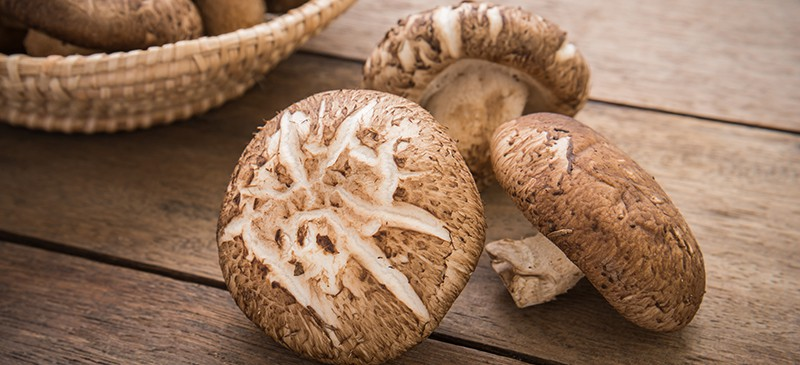

Pantothenic Acid
Health Benefits:
- Fat Metabolism
- Energy Production
Food Source:
- Cucumber, Avocado, Papaya, Raspberries, Grapefruits, Pineapple, Watermelon, Oranges,
Cranberries, Tomatoes, Figs
- Shiitake Mushrooms, Crimini Mushrooms, Cauliflower, Sweet Potato, Broccoli,
Beet Greens, Asparagus, Turnip Greens, Bell Peppers, Celery, Winter Squash, Potato,
Collard Greens, Brussel Sprouts, Carrots, Swiss Chard, Spinach, Summer Squash, Cabbage,
Fennel, Mustard Greens, Sea Vegetables, Romaine Lettuce, Bok Choy
- Lentils, Dried Peas
- Chicken, Turkey, Salmon, Beef, Shrimp, Cod
- Yogurt, Milk
- Rye, Wheat, Corn
- Eggs
